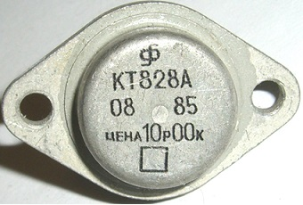

Транзистор КТ828
КТ828, 2Т828 - биполярный кремниевый мезапланарный n-p-n транзистор. Транзисторы изготавливаются в корпусе ТО-3. Предназначены для применения в источниках вторичного электропитания, высоковольтных переключающих устройствах. Используются для работы в электронной аппаратуре общего назначения.
Выпускаются в металлическом корпусе КТ-9 (TO-3) со стеклянными изоляторами и жёсткими выводами. Маркировка нанесена цифро-буквенным кодом на корпусе транзистора. Масса транзистора не более 20,0 г.
Технические условия - аА0.336.340ТУ.
Импортный аналог: BUX97, BUX97A, BUX97B, 2SC2121, 2SC2790 2SC2790A, 2SC2791, BU326A, SDT18328.


Рис. 1 - Цоколёвка, размеры и внешний вид транзистора КТ828
| Модель | IК, макс, А | UКЭ макс, В | UКБ макс, В | UЭБ макс, В | PК макс, Вт | h21Э | UКЭ нас, В | IКБ0, мА | fгр, МГц |
|---|---|---|---|---|---|---|---|---|---|
| КТ828А | 5 (7,5) | 800 | 800 | 5 | 50 | 2,25 | 3 | 4 | 5 |
| КТ828Б | 5 (7,5) | 600 | 600 | 5 | 50 | 2,25 | 3 | 4 | 5 |
| КТ828В | 5 (7,5) | 800 | 800 | 5 | 50 | 2,25 | 3 | 4 | 5 |
| КТ828Г | 5 (7,5) | 600 | 600 | 5 | 50 | 2,25 | 3 | 4 | 5 |
| 2Т828А | 5 (7,5) | 800 | 800 | 5 | 50 | 2,25 | 3 | 4 | 5 |
| 2Т828Б | 5 (7,5) | 600 | 600 | 5 | 50 | 2,25 | 3 | 4 | 5 |
 Справочный лист на транзистор КТ828, 2Т828
Справочный лист на транзистор КТ828, 2Т828
Источники
joyta.ru - Транзистор КТ819: характеристики, цоколевка, аналог